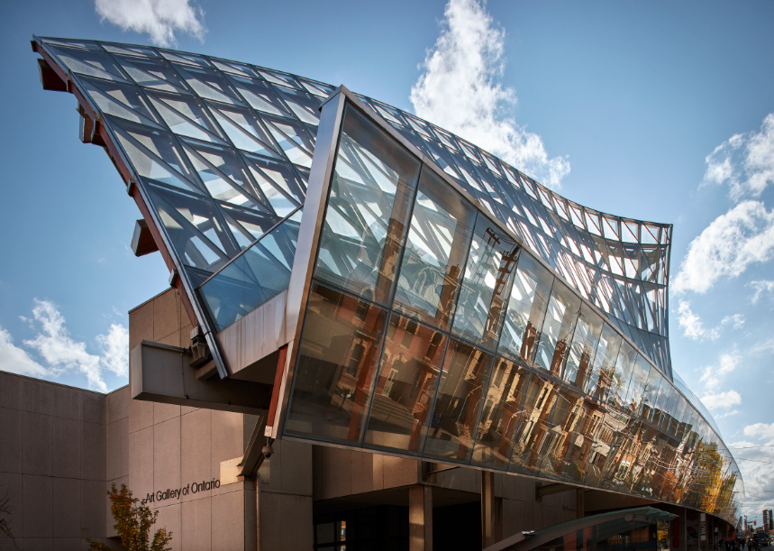
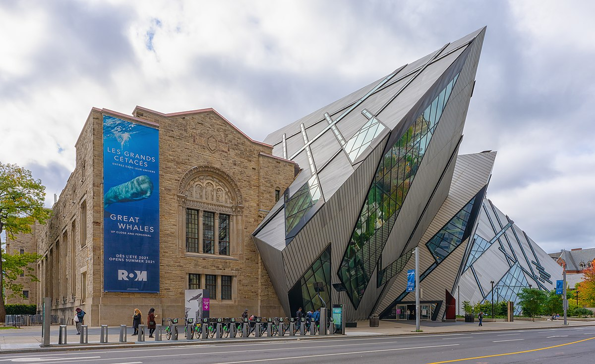

Art Gallery of Ontario

Home to over 90,000 artworks across five floors, the gallery is one of the largest and most esteemed art museums in North America.
It showcases a diverse range of pieces, including contemporary art, European masterpieces, and works by Canadian artists.
The permanent collection spans from the first century to the present day. Admission is typically $30, but the gallery offers free entry on the first
Wednesday evening of each month from 6 PM to 9 PM.
Royal Ontario Museum

The Royal Ontario Museum is Canada's largest museum, renowned for its collections of art, world culture, and natural history, attracting over 1 million visitors each year.
With more than 18 million items across 40 galleries, it boasts a diverse array of exhibits that enhance its international reputation.
Highlights include dinosaur fossils, minerals, meteorites, and historical artifacts from Canada and Europe, as well as art from Africa, the Near East, and East Asia.
Notably, it features the world's largest collection of Burgess Shale fossils, with over 150,000 specimens. The museum also houses an impressive selection of design and fine art,
particularly in clothing, interior design, and Art Deco pieces.
Little Canada
Little Canada is a unique museum that showcases the beautiful cities and landscapes of Canada through miniature models.
Spanning over 45,000 square feet, this museum offers an immersive experience as visitors explore the intricately detailed models of the country.
At a cost, visitors can also make a miniature 3D printed figure of themselves where they can choose to place it anywhere in Little Canada.